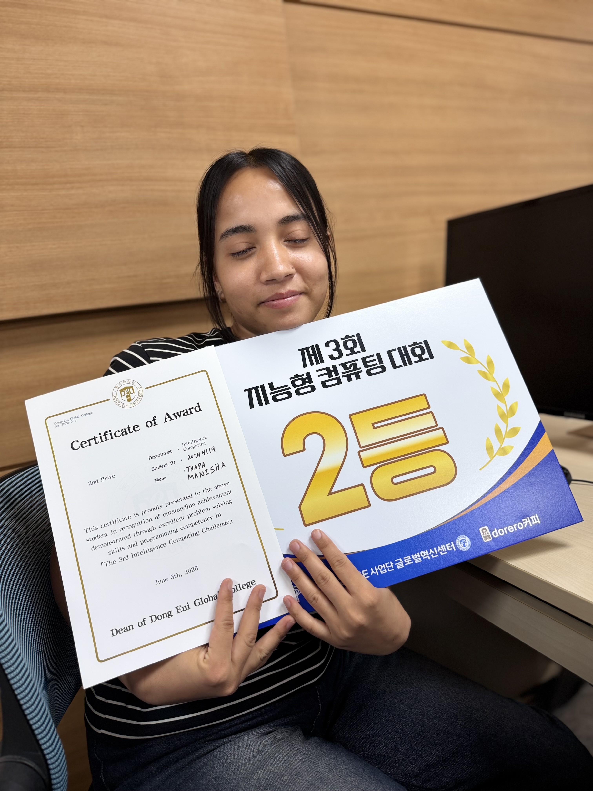
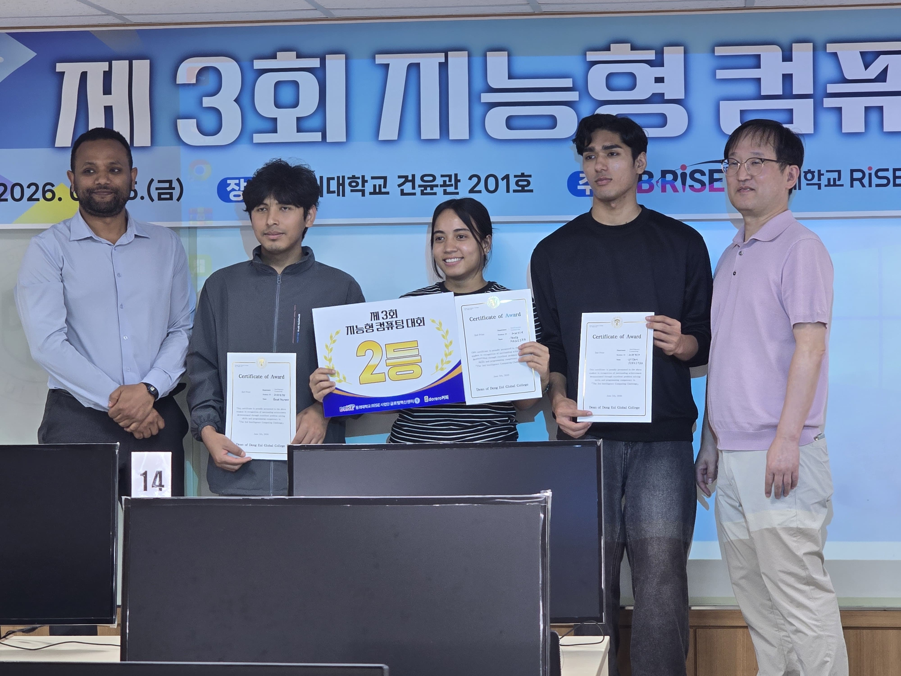
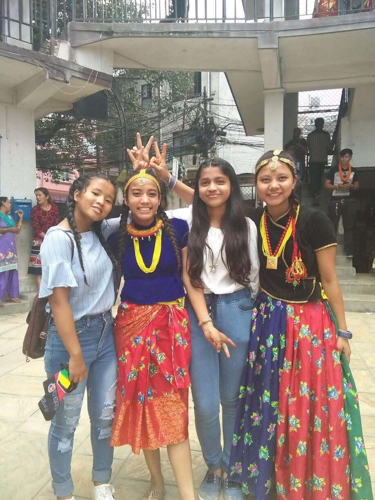
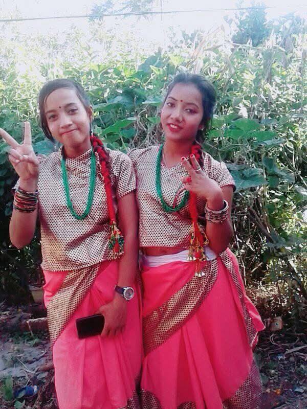
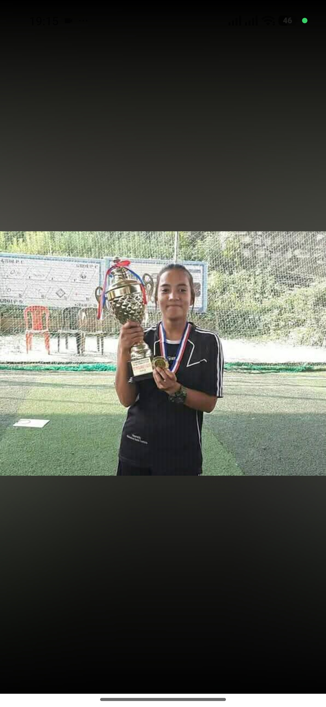
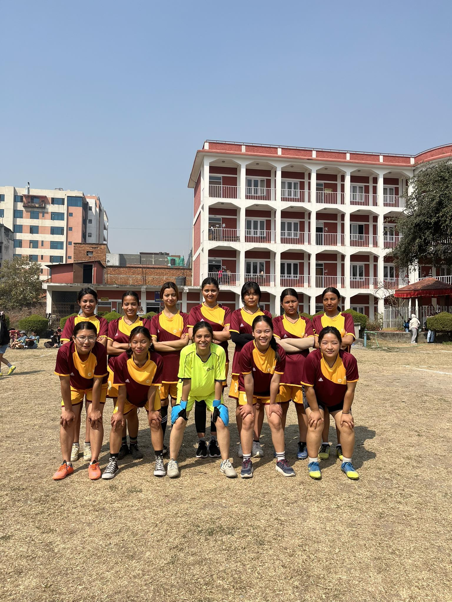
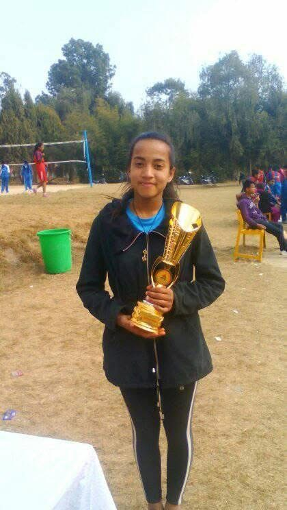
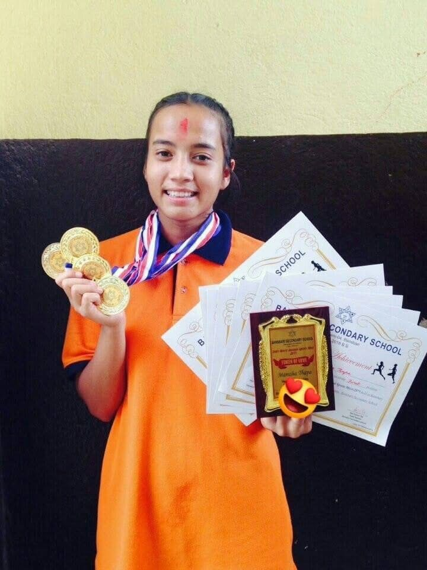
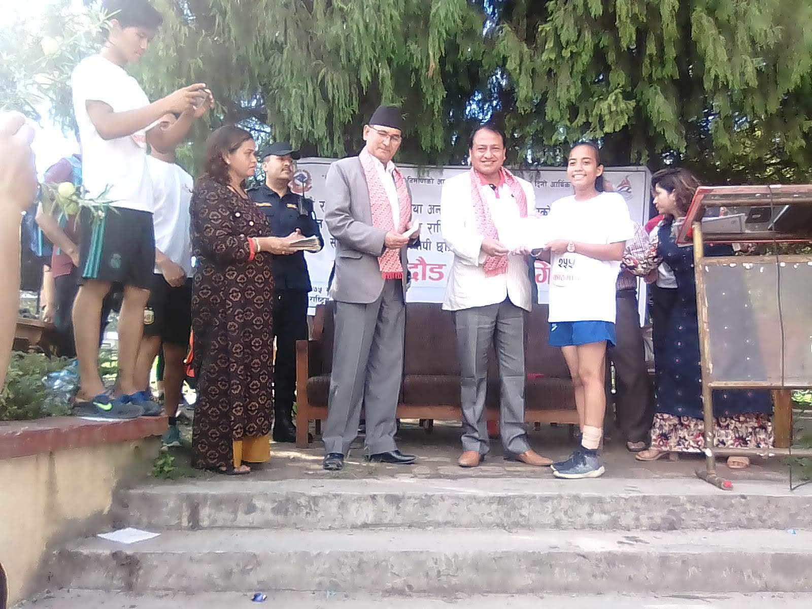

My Biography
Driven by curiosity, shaped by experience, and always growing.
Early Life in Nepal
I was born in 2002 in Kathmandu, the capital city of Nepal. I started school at the age of four and quickly developed a love for learning. I was a dedicated student and consistently topped my class, passing my exams with high marks. While I was exceptionally talented in science from a young age, I initially struggled a bit with mathematics—but through hard work, I improved significantly and turned it into a strength.
Growing up, I also had a deep appreciation for the arts. I spent my free time writing poems and quotes, and I have always loved to dance.
Athletics & Academics
During my school years, I was highly active in sports. I played football for about four years, competing in and winning various futsal tournaments. I also participated in district-level marathons, consistently securing top positions. My dedication to athletics earned me cash prizes and medals awarded by the sports minister.
Eventually, I decided to step back from sports to focus entirely on my academic dreams. I wanted to pursue architecture, so I enrolled in the science faculty at Birendra Secondary School, a renowned government institution, where I completed my 12th grade (+2) with excellent grades.
University Life in South Korea
Coming to South Korea opened a new chapter in my life. As a Software Engineering student, I have enjoyed taking part in university activities and putting my skills into practice. One of my proudest achievements has been winning second prize in a university coding competition for two consecutive years. These experiences have helped me grow as a problem solver and given me more confidence in my abilities.
University life has also brought plenty of fun days with friends. Alongside studying and coding, I enjoy joining campus activities, sharing new experiences, and making memories together. Those friendships have made life in a new country feel more like home.


Beyond the Classroom
Dance, football, and running have all been part of my story. These are a few memories of the creativity, teamwork, and determination I carry with me beyond my studies.
Dancing
Dancing has always been one of my favorite ways to express myself. I love the connection to my culture and the joy of sharing those moments with friends.


Football
Football was a big part of my school years. Playing in futsal tournaments taught me to trust my teammates, stay focused, and keep going. My team and tournament memories remain some of my favorites.


Running
Running taught me patience and perseverance, one step at a time. From my first running award to district-level competitions, each experience gave me another reason to keep challenging myself.


